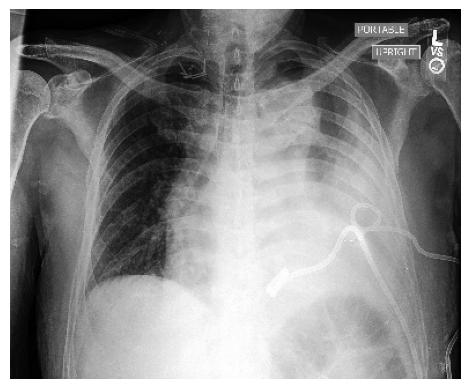
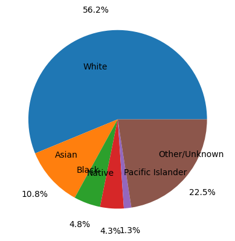

#need to import Drive
from google.colab import drive
drive.mount('/content/drive', force_remount=True)Mounted at /content/drive#need to import Drive
from google.colab import drive
drive.mount('/content/drive', force_remount=True)Mounted at /content/driveimport os
# Set your working directory to a folder in your Google Drive. This way, if your notebook times out,
# your files will be saved in your Google Drive!
# the base Google Drive directory
root_dir = "/content/drive/Shareddrives/"
# choose where you want your project files to be saved
project_folder = "CSCI451/"
def create_and_set_working_directory(project_folder):
# check if your project folder exists. if not, it will be created.
if os.path.isdir(root_dir + project_folder) == False:
os.mkdir(root_dir + project_folder)
print(root_dir + project_folder + ' did not exist but was created.')
# change the OS to use your project folder as the working directory
os.chdir(root_dir + project_folder)
# create a test file to make sure it shows up in the right place
create_and_set_working_directory(project_folder)
Your working directory was changed to /content/drive/Shareddrives/CSCI451/
An empty text file was created there. You can also run !pwd to confirm the current working directory.#This just will show the images
import cv2
from matplotlib import pyplot as plt
img = cv2.imread('/content/drive/Shareddrives/CSCI451/train/patient00142/study3/view1_frontal.jpg')
#img = cv2.imread('/content/drive/MyDrive/chexpert_small/train/patient00974/study1/view1_frontal.jpg')
# cv2.imshow()
plt.imshow(img)
plt.axis("off")
plt.show()
df_train_race holds our data set of patient ID and race.
# import our race data set and load as a dataframe
import pandas as pd
df_train_race = pd.read_excel('/content/drive/Shareddrives/CSCI451/chexpert_race.xlsx')
df_train_race| PATIENT | GENDER | AGE_AT_CXR | PRIMARY_RACE | ETHNICITY | |
|---|---|---|---|---|---|
| 0 | patient24428 | Male | 61 | White | Non-Hispanic/Non-Latino |
| 1 | patient48289 | Female | 39 | Other | Hispanic/Latino |
| 2 | patient33856 | Female | 81 | White | Non-Hispanic/Non-Latino |
| 3 | patient41673 | Female | 42 | Unknown | Unknown |
| 4 | patient48493 | Male | 71 | White | Non-Hispanic/Non-Latino |
| ... | ... | ... | ... | ... | ... |
| 65396 | patient65702 | Male | 1 | Other | Hispanic/Latino |
| 65397 | patient04979 | Female | 27 | Other | Hispanic/Latino |
| 65398 | patient11445 | Female | 29 | Unknown | Unknown |
| 65399 | patient23235 | Female | 41 | Other, Hispanic | Hispanic/Latino |
| 65400 | patient05143 | Male | 24 | White | Non-Hispanic/Non-Latino |
65401 rows × 5 columns
# print the unique labels for race - we need to make some determinations here
print(df_train_race['PRIMARY_RACE'].unique())
white_no = (df_train_race['PRIMARY_RACE'].str.contains('White')).sum()
black_no = (df_train_race['PRIMARY_RACE'].str.contains('Black')).sum()
asian_no = (df_train_race['PRIMARY_RACE'].str.contains('Asian')).sum()
native_no = (df_train_race['PRIMARY_RACE'].str.contains('American')).sum()
islander_no = (df_train_race['PRIMARY_RACE'].str.contains('Pacific')).sum()
rest_no = len(df_train_race) - white_no - black_no - asian_no - native_no - islander_no
print('White: ' + str(white_no) + '\n Asian: ' + str(asian_no) + '\n Black: ' + str(black_no) + '\n Native American: ' + str(native_no) + '\n Pacific Islander: '
+ str(islander_no) + '\n Other/Unknown: ' + str(rest_no))
labels = ['White', 'Asian', 'Black', 'Native', 'Pacific Islander', 'Other/Unknown']
sizes = [white_no, asian_no, black_no, native_no, islander_no, rest_no]
plt.pie(sizes, labels = labels, autopct='%1.1f%%',
pctdistance=1.25, labeldistance=.6)
plt.show()['White' 'Other' 'Unknown' 'White, non-Hispanic' 'Asian' nan
'Black or African American' 'Black, non-Hispanic' 'Other, Hispanic'
'Race and Ethnicity Unknown' 'Asian, non-Hispanic'
'Pacific Islander, non-Hispanic'
'Native Hawaiian or Other Pacific Islander' 'Other, non-Hispanic'
'Patient Refused' 'White, Hispanic' 'Black, Hispanic' 'Asian, Hispanic'
'American Indian or Alaska Native' 'Native American, Hispanic'
'Native American, non-Hispanic' 'Pacific Islander, Hispanic'
'Asian - Historical Conv' 'White or Caucasian']
White: 36772
Asian: 7061
Black: 3147
Native American: 2794
Pacific Islander: 881
Other/Unknown: 14746
['Non-Hispanic/Non-Latino' 'Hispanic/Latino' 'Unknown' nan
'Patient Refused' 'Hispanic' 'Not Hispanic']| PATIENT | GENDER | AGE_AT_CXR | PRIMARY_RACE | ETHNICITY | |
|---|---|---|---|---|---|
| 1 | patient48289 | Female | 39 | Other | Hispanic/Latino |
| 13 | patient51575 | Male | 68 | Other | Hispanic/Latino |
| 32 | patient28670 | Male | 63 | Other | Hispanic/Latino |
| 53 | patient65275 | Female | 59 | Other | Non-Hispanic/Non-Latino |
| 61 | patient54887 | Male | 74 | Other | Hispanic/Latino |
| ... | ... | ... | ... | ... | ... |
| 65386 | patient33297 | Female | 40 | Other | Hispanic/Latino |
| 65390 | patient15562 | Female | 50 | Other | Hispanic/Latino |
| 65395 | patient32620 | Female | 21 | Other | Hispanic/Latino |
| 65396 | patient65702 | Male | 1 | Other | Hispanic/Latino |
| 65397 | patient04979 | Female | 27 | Other | Hispanic/Latino |
8510 rows × 5 columns
df_patients holds a csv of image links with sex, age, other features related to their hospitalization. Notice that the patient ID is inside the text for the links. Also, one patient can have multiple images from different times. Images are in two categories frontal and lateral (front of body vs. side of body).
| Path | Sex | Age | Frontal/Lateral | AP/PA | No Finding | Enlarged Cardiomediastinum | Cardiomegaly | Lung Opacity | Lung Lesion | Edema | Consolidation | Pneumonia | Atelectasis | Pneumothorax | Pleural Effusion | Pleural Other | Fracture | Support Devices | |
|---|---|---|---|---|---|---|---|---|---|---|---|---|---|---|---|---|---|---|---|
| 0 | CheXpert-v1.0-small/train/patient00001/study1/... | Female | 68 | Frontal | AP | 1.0 | NaN | NaN | NaN | NaN | NaN | NaN | NaN | NaN | 0.0 | NaN | NaN | NaN | 1.0 |
| 1 | CheXpert-v1.0-small/train/patient00002/study2/... | Female | 87 | Frontal | AP | NaN | NaN | -1.0 | 1.0 | NaN | -1.0 | -1.0 | NaN | -1.0 | NaN | -1.0 | NaN | 1.0 | NaN |
| 2 | CheXpert-v1.0-small/train/patient00002/study1/... | Female | 83 | Frontal | AP | NaN | NaN | NaN | 1.0 | NaN | NaN | -1.0 | NaN | NaN | NaN | NaN | NaN | 1.0 | NaN |
| 3 | CheXpert-v1.0-small/train/patient00002/study1/... | Female | 83 | Lateral | NaN | NaN | NaN | NaN | 1.0 | NaN | NaN | -1.0 | NaN | NaN | NaN | NaN | NaN | 1.0 | NaN |
| 4 | CheXpert-v1.0-small/train/patient00003/study1/... | Male | 41 | Frontal | AP | NaN | NaN | NaN | NaN | NaN | 1.0 | NaN | NaN | NaN | 0.0 | NaN | NaN | NaN | NaN |
| ... | ... | ... | ... | ... | ... | ... | ... | ... | ... | ... | ... | ... | ... | ... | ... | ... | ... | ... | ... |
| 223409 | CheXpert-v1.0-small/train/patient64537/study2/... | Male | 59 | Frontal | AP | NaN | NaN | NaN | -1.0 | NaN | NaN | NaN | NaN | -1.0 | 0.0 | 1.0 | NaN | NaN | NaN |
| 223410 | CheXpert-v1.0-small/train/patient64537/study1/... | Male | 59 | Frontal | AP | NaN | NaN | NaN | -1.0 | NaN | NaN | NaN | 0.0 | -1.0 | NaN | -1.0 | NaN | NaN | NaN |
| 223411 | CheXpert-v1.0-small/train/patient64538/study1/... | Female | 0 | Frontal | AP | NaN | NaN | NaN | NaN | NaN | -1.0 | NaN | NaN | NaN | NaN | NaN | NaN | NaN | NaN |
| 223412 | CheXpert-v1.0-small/train/patient64539/study1/... | Female | 0 | Frontal | AP | NaN | NaN | 1.0 | 1.0 | NaN | NaN | NaN | -1.0 | 1.0 | 0.0 | NaN | NaN | NaN | 0.0 |
| 223413 | CheXpert-v1.0-small/train/patient64540/study1/... | Female | 0 | Frontal | AP | 1.0 | NaN | NaN | NaN | NaN | NaN | NaN | NaN | NaN | 0.0 | NaN | NaN | NaN | NaN |
223414 rows × 19 columns
#need to sort df_train_race by patient ID, otherwise just annoying to index
#df_train_race = pd.read_excel('/content/drive/Shareddrives/CSCI451/chexpert_race.xlsx')
df_race_sorted = df_train_race.sort_values(by=['PATIENT'],ignore_index=True)
df_race_sorted = df_race_sorted.dropna()
#df_race_sorted = df_race_sorted[df_race_sorted["PRIMARY_RACE" == "Patient Refused"]]
df_race_sorted | PATIENT | GENDER | AGE_AT_CXR | PRIMARY_RACE | ETHNICITY | |
|---|---|---|---|---|---|
| 0 | patient00001 | Female | 68 | Other | Non-Hispanic/Non-Latino |
| 1 | patient00002 | Female | 87 | White, non-Hispanic | Non-Hispanic/Non-Latino |
| 2 | patient00003 | Male | 41 | White, non-Hispanic | Non-Hispanic/Non-Latino |
| 3 | patient00004 | Female | 20 | Black or African American | Non-Hispanic/Non-Latino |
| 4 | patient00005 | Male | 33 | White | Non-Hispanic/Non-Latino |
| ... | ... | ... | ... | ... | ... |
| 65396 | patient65731 | Female | 64 | White | Non-Hispanic/Non-Latino |
| 65397 | patient65732 | Female | 0 | Asian | Non-Hispanic/Non-Latino |
| 65398 | patient65735 | Female | 1 | White | Non-Hispanic/Non-Latino |
| 65399 | patient65739 | Female | 44 | Unknown | Non-Hispanic/Non-Latino |
| 65400 | patient65740 | Female | 75 | Asian | Non-Hispanic/Non-Latino |
64855 rows × 5 columns
#again, df_patients['PATIENT'] holds links for the file directory, here I split so instead I can have the patient ID
df_patients['PATIENT'] = [df_patients['Path'][i].split("/")[2] for i in range(df_patients.shape[0])]
#I then merge the patient race with df_race_sorted, which will give me the patient ID - race
df_patients_race = pd.merge(df_patients,df_race_sorted,on='PATIENT')
"""
#check
for index, row in df_patients_race[206949:].iterrows():
race_sorted_index = df_race_sorted.index[df_race_sorted["PATIENT"] == row["PATIENT"]].tolist()
if (len(race_sorted_index) != 1):
print("error!")
break
i = race_sorted_index[0]
if not (row['PATIENT'] in row['Path']):
print(row,"patient error!")
break
if not (row['ETHNICITY'] == df_race_sorted["ETHNICITY"][i]):
print(row,"ethnicity error!",row['ETHNICITY'],df_race_sorted["ETHNICITY"][i])
break
if not (row['PRIMARY_RACE'] == df_race_sorted["PRIMARY_RACE"][i]):
print(row,"race error!")
break
if not (row['Sex'] == df_race_sorted["GENDER"][i]):
print(row,"sex error!")
break
"""
#there is a gender error for patient 51668, index 202352
# gender error for patient 54170, index 206312
# gender error for patient 54565, index 206948
df_patients_raceimport sys
import os
from pathlib import Path
from sklearn.model_selection import train_test_split
from sklearn.metrics import roc_auc_score
import torch
import torch.nn as nn
from torch.utils.data import DataLoader
from torch.utils.data import Dataset
from torch import optim
import torchvision.transforms as transforms
import torchvision
from fastprogress import master_bar, progress_bar
from PIL import Image
#I used a lot of code from https://www.kaggle.com/code/hmchuong/chexpert-pytorch-densenet121?scriptVersionId=18314696&cellId=15
class ChestXrayDataset(Dataset):
#creates a Torch Dataset that we can use to do machine learning on
def __init__(self,folder_dir,dataframe,image_labels,image_size,normalization):
#a lot of this function is
# folder_dir is the directory path to the data
# dataframe holds patient info and labels
# it takes in our image labels
self.image_paths=[]
#self.image_labels=[]
self.image_labels=[]
#This transforms our image, I think we would also need normalization
image_transformation = [
#transforms.Grayscale(num_output_channels=1), #ONLY USE FOR PYTORCH XRAY
transforms.Resize((image_size,image_size)),
transforms.ToTensor()
]
#this normalizes using some constants from imagenet
if normalization:
#ONLY COMMENT OUT FOR PYTORCH XRAY
#image_transformation.append(transforms.Normalize(IMAGENET_MEAN,IMAGENET_STD))
image_transformation.append(transforms.Normalize([0.485],[0.229]))
self.image_transformation = transforms.Compose(image_transformation)
#this will index through all the patients from 000001, so forth, adding images from study1
for index, row in dataframe.iterrows():
#image_path = os.path.join(folder_dir,Path(row['PATIENT']),Path('study1'),Path('view1_frontal.jpg'))
#here I use lateral and frontal images
row_path_list = row['Path'].split("/")
image_path = os.path.join(folder_dir,row_path_list[2],row_path_list[3],row_path_list[4])
#if (os.path.isfile(image_path)):
self.image_paths.append(image_path)
#else:
# continue
#in this case I've hard-coded the image_labels to be if the patient is Black or not
#NOTICE that I'm append a list to a list here
image_label = []
if ( row["PRIMARY_RACE"] == 'White' or row["PRIMARY_RACE"] == 'White, non-Hispanic' or row["PRIMARY_RACE"] == 'White or Caucasian'):
image_label.append(1)
#else:
# image_label.append(0)
elif ( row["PRIMARY_RACE"] == 'Black or African American' or row["PRIMARY_RACE"] == 'Black, non-Hispanic'):
image_label.append(2)
#else:
# image_label.append(0)
elif ( row["PRIMARY_RACE"] == 'Asian' or row["PRIMARY_RACE"] == 'Asian, non-Hispanic' or row["PRIMARY_RACE"] == 'Asian - Historical Conv'):
image_label.append(3)
else:
image_label.append(0)
#DELETE THIS IF NOT USING TORCH XRAY
#for i in range(17):
# image_label.append(5)
self.image_labels.append(image_label)
#self.image_labels.append([int(1*((row["PATIENT"] == 'Black or African American') | (row["PATIENT"] == 'Black, non-Hispanic')))])
#print(self.image_paths)
def __len__(self):
#I think this is necessary for other things
return len(self.image_paths)
def __getitem__(self,index):
#This is also just necessary for other parts
# Read image
image_path = self.image_paths[index]
#ONLY COMMENT OUT FOR PYTORCH XRAY
image_data = Image.open(image_path).convert("RGB")
#image_data = Image.open(image_path)
image_data = self.image_transformation(image_data)
return image_data, torch.FloatTensor(self.image_labels[index])
IMAGE_SIZE = 224 # Image size (224x224)
IMAGENET_MEAN = [0.485, 0.456, 0.406] # Mean of ImageNet dataset (used for normalization)
IMAGENET_STD = [0.229, 0.224, 0.225] # Std of ImageNet dataset (used for normalization)
BATCH_SIZE = 96
#BATCH_SIZE = 1728 #ONLY FOR PYTORCH XRAY VISION
LEARNING_RATE = 0.001
LEARNING_RATE_SCHEDULE_FACTOR = 0.1 # Parameter used for reducing learning rate
LEARNING_RATE_SCHEDULE_PATIENCE = 5 # Parameter used for reducing learning rate
MAX_EPOCHS = 2 # Maximum number of training epochsDefine the dataset object here
#train_dataset = ChestXrayDataset("/content/drive/Shareddrives/CSCI451/train", df_train_race_mod, race_is_white, IMAGE_SIZE, True)
#train the dataset with the first 2000 images, this includes frontal and lateral images
train_dataset = ChestXrayDataset("/content/drive/Shareddrives/CSCI451/train", df_patients_race[:1000], race_is_white, IMAGE_SIZE, True)
#print(ChestXrayDataset.len(train_dataset))Create the loader for the dataset here - basically it is nice to have this so we can load the data in batches when we need instead of loading the entire dataset onto RAM, which is costly and slow.
"""
def train(model, data_loader, optimizer, k_epochs = 1, print_every = 2000):
begin = time.time()
# loss function is cross-entropy (multiclass logistic)
loss_fn = nn.CrossEntropyLoss()
# optimizer is Adam, which does fancier stuff with the gradients
for epoch in range(k_epochs):
running_loss = 0.0
i = 0
#for i, data in enumerate(data_loader, 0):
for data,label in data_loader:
#print(data.size())
# extract a batch of training data from the data loader
X = data
#only flatten for binary classification
y = torch.flatten(label)
#y = label
y = y.to(torch.long)
X = X.to(device)
y = y.to(device)
# zero out gradients: we're going to recompute them in a moment
optimizer.zero_grad()
# compute the loss (forward pass)
y_hat = model(X)
#print("Here!")
#print(y_hat)
#print(y)
loss = loss_fn(y_hat, y)
#print("All good here!")
# compute the gradient (backward pass)
loss.backward()
# Adam uses the gradient to update the parameters
optimizer.step()
# print statistics
running_loss += loss.item()
# print the epoch, number of batches processed, and running loss
# in regular intervals
if i % print_every == print_every - 1:
#if True:
print(f'[epoch: {epoch + 1}, batches: {i + 1:5d}], training loss: {running_loss / print_every:.3f}')
#print(loss.item())
running_loss = 0.0
#print(i)
i += 1
end = time.time()
print(f'Finished training in {round(end - begin)}s')
""""""
from scipy.sparse import coo_array
def test(model, data_loader):
correct = 0
total = 0
# torch.no_grad creates an environment in which we do NOT store the
# computational graph. We don't need to do this because we don't care about
# gradients unless we're training
i = 0
with torch.no_grad():
#for data in data_loader:
for data, label in data_loader:
#print(data.size())
#print(label.size())
X = data
# only flatten if binary setup
y = torch.flatten(label)
#y = label
#X, y = data
X = X.to(device)
y = y.to(device)
# run all the images through the model
y_hat = model(X)
# the class with the largest model output is the prediction
_, predicted = torch.max(y_hat.data, 1)
# compute the accuracy
total += y.size(0)
correct += (predicted == y).sum().item()
i += 1
print(i)
print(correct)
print(total)
print(f'Test accuracy: {100 * correct // total} %')
"""import torch.optim as optim
def train(model, trainloader, optimizer, k_epochs = 1, print_every = 2000):
begin = time.time()
# loss function is cross-entropy (multiclass logistic)
loss_fn = nn.CrossEntropyLoss()
# optimizer is Adam, which does fancier stuff with the gradients
#optimizer = optim.Adam(model.parameters(), lr=0.001)
for epoch in range(k_epochs):
running_loss = 0.0
for i, data in enumerate(trainloader, 0):
# extract a batch of training data from the data loader
X, y = data
X = X.to(device)
#print(y)
#need to flatten y - this holds labels for each image in the batch, but as a list of a list
y = torch.flatten(y)
y = y.to(torch.long)
#print(y)
y = y.to(device)
# zero out gradients: we're going to recompute them in a moment
optimizer.zero_grad()
# compute the loss (forward pass)
y_hat = model(X)
#print(y_hat)
loss = loss_fn(y_hat, y)
# compute the gradient (backward pass)
loss.backward()
# Adam uses the gradient to update the parameters
optimizer.step()
# print statistics
running_loss += loss.item()
# print the epoch, number of batches processed, and running loss
# in regular intervals
if i % print_every == print_every - 1:
print(f'[epoch: {epoch + 1}, batches: {i + 1:5d}], loss: {running_loss / print_every:.3f}')
running_loss = 0.0
end = time.time()
print(f'Finished training in {round(end - begin)}s')def test(model, testloader):
correct = 0
total = 0
# torch.no_grad creates an environment in which we do NOT store the
# computational graph. We don't need to do this because we don't care about
# gradients unless we're training
with torch.no_grad():
for data, label in testloader:
#X, y = data
X = data
y = label
X = X.to(device)
y = torch.flatten(label)
y = y.to(torch.long)
y = y.to(device)
print(y)
# run all the images through the model
y_hat = model(X)
#print(y_hat)
# the class with the largest model output is the prediction
_, predicted = torch.max(y_hat.data, 1)
print("predicted: ",predicted)
# compute the accuracy
total += y.size(0)
correct += (predicted == y).sum().item()
#print(total,correct)
print(f'Test accuracy: {100 * correct // total} %')from torchvision import models
import torchxrayvision as xrv
import skimage, torch, torchvision
# instead train only the parameters of the final layer
# can be around 50% faster
#"""
#pretrained resnet 18 model with weights from IMAGENET
model = models.resnet18(weights='IMAGENET1K_V1')
model = model.to(device)
# no gradients for any of the model parameters, so no updates
for param in model.parameters():
param.requires_grad = False
# Parameters of newly constructed modules have requires_grad=True by default
num_ftrs = model.fc.in_features
#out_ftrs = 2 #for binary classification
out_ftrs = 4
model.fc = nn.Linear(num_ftrs, out_ftrs)
model = model.to(device)
# Observe that only parameters of final layer are being optimized as
# opposed to before.
#optimizer = optim.Adam(model.fc.parameters(), lr=0.001)
optimizer = optim.Adam(model.fc.parameters(), lr=0.0005)
#"""
"""
#from pytorch xrayvision use a pretrained model
model = xrv.models.DenseNet(weights="densenet121-res224-nih") # NIH chest X-ray8
model = model.to(device)
# no gradients for any of the model parameters, so no updates
for param in model.parameters():
param.requires_grad = False
print(model.classifier.in_features,model.classifier.out_features)
# Parameters of newly constructed modules have requires_grad=True by default
#num_ftrs = model.classifier.in_features
#out_ftrs = 2 #for binary classification
#out_ftrs = 4
#model.classifier = nn.Linear(num_ftrs, out_ftrs)
print(model.classifier.in_features,model.classifier.out_features)
model = model.to(device)
# Observe that only parameters of final layer are being optimized as
# opposed to before.
optimizer = optim.Adam(model.classifier.parameters(), lr=0.001)
"""import time
#previous value
df_val_race_mod = df_train_race.sort_values(by=['PATIENT'])[2000:2400]
#df_val_race_mod = df_train_race.sort_values(by=['PATIENT'])[10000:12000]
race_is_black_val = ((df_val_race_mod['PRIMARY_RACE'] == 'Black or African American') | (df_val_race_mod['PRIMARY_RACE'] =='Black, non-Hispanic'))
#race_is_black.sum()
race_is_white_val = ((df_val_race_mod['PRIMARY_RACE'] == 'White') | (df_val_race_mod['PRIMARY_RACE'] =='White, non-Hispanic') | (df_val_race_mod['PRIMARY_RACE'] =='White or Caucasian'))
print(race_is_white_val.sum())
#val_dataset = ChestXrayDataset("/content/drive/MyDrive/chexpert_small/train", df_val_race_mod, race_is_black_val, IMAGE_SIZE, True)
val_dataset = ChestXrayDataset("/content/drive/Shareddrives/CSCI451/train", df_patients_race[10000:11500], race_is_white_val, IMAGE_SIZE, True)
val_dataloader = DataLoader(dataset=val_dataset, batch_size=BATCH_SIZE, shuffle=False, num_workers=2, pin_memory=True)
optimizer = optim.Adam(model.fc.parameters(), lr=0.001)
train(model, train_dataloader, optimizer, k_epochs = 100, print_every = 20)
test(model,val_dataloader)odf_val_race_mod = df_train_race.sort_values(by=['PATIENT'])[2000:2321]
race_is_black_val = ((df_val_race_mod['PRIMARY_RACE'] == 'Black or African American') | (df_val_race_mod['PRIMARY_RACE'] =='Black, non-Hispanic'))
print(race_is_black_val.sum())
print(df_val_race_mod.shape)
print(100*(1-race_is_black_val.sum()/df_val_race_mod.shape[0]))
val_dataset = ChestXrayDataset("/content/drive/Shareddrives/CSCI451/train", df_patients_race[2000:2321], race_is_white_val, IMAGE_SIZE, True)
print(BATCH_SIZE)
val_dataloader = DataLoader(dataset=val_dataset, batch_size=BATCH_SIZE, shuffle=False, num_workers=2, pin_memory=True)
test(model,val_dataloader)Model Optimization
import torch.optim as optim
from torch.utils.data import Dataset, DataLoader,TensorDataset,random_split,SubsetRandomSampler, ConcatDataset
from sklearn.model_selection import KFold
import time
def train_epoch(model, trainloader, optimizer, loss_fn, print_every = 2000):
training_loss = 0.0
for i, data in enumerate(trainloader, 0):
# extract a batch of training data from the data loader
X, y = data
X = X.to(device)
#need to flatten y - this holds labels for each image in the batch, but as a list of a list
y = torch.flatten(y)
y = y.to(torch.long)
y = y.to(device)
# zero out gradients: we're going to recompute them in a moment
optimizer.zero_grad()
# compute the loss (forward pass)
y_hat = model(X)
loss = loss_fn(y_hat, y)
# compute the gradient (backward pass)
loss.backward()
# Adam uses the gradient to update the parameters
optimizer.step()
# print statistics
training_loss += loss.item()
return training_loss
def test_epoch(model, testloader):
correct = 0
total = 0
with torch.no_grad():
for data, label in testloader:
#X, y = data
X = data
y = label
X = X.to(device)
y = torch.flatten(label)
y = y.to(torch.long)
y = y.to(device)
# run all the images through the model
y_hat = model(X)
# the class with the largest model output is the prediction
_, predicted = torch.max(y_hat.data, 1)
#print("predicted: ",predicted)
# compute the accuracy
total += y.size(0)
correct += (predicted == y).sum().item()
return correct/total
def optimize(train_dataset,lr_params,max_epochs=100,batch_size=BATCH_SIZE):
"""
So far this only optimizes the learning rate, ideally it would optimize more
https://medium.com/dataseries/k-fold-cross-validation-with-pytorch-and-sklearn-d094aa00105f
a helpful example
"""
begin = time.time()
loss_fn = nn.CrossEntropyLoss()
k_folds = 5
splits=KFold(n_splits=k_folds,shuffle=True,random_state=42)
#best_param = lr_params[0]
#best_train_loss = 10.0
#best_valid_loss = 10.0
best_train_losses = []
best_valid_losses = []
for lr_param in lr_params:
print("Param value: ",lr_param)
#holds best losses in each fold for particular param value
train_losses = []
valid_losses = []
for fold, (train_idx,val_idx) in enumerate(splits.split(np.arange(len(train_dataset)))):
print("Fold: ",fold)
train_sampler_epoch = SubsetRandomSampler(train_idx)
val_sampler_epoch = SubsetRandomSampler(val_idx)
train_loader_epoch = DataLoader(train_dataset, batch_size=batch_size, sampler=train_sampler_epoch)
val_loader_epoch = DataLoader(train_dataset, batch_size=batch_size, sampler=val_sampler_epoch)
#pretrained resnet 18 model with weights from IMAGENET
model = models.resnet18(weights='IMAGENET1K_V1')
num_ftrs = model.fc.in_features
out_ftrs = 4
model.fc = nn.Linear(num_ftrs, out_ftrs)
model = model.to(device)
optimizer = optim.Adam(model.fc.parameters(), lr=lr_param)
best_epoch_train_loss = 100.0
best_epoch_val_loss = 0.0
for epoch in range(max_epochs):
train_loss = train_epoch(model, train_loader_epoch, optimizer, loss_fn)
val_loss = test_epoch(model, val_loader_epoch)
#print(lr_param,"Epoch: ",epoch," train loss: ",train_loss," test loss: ",val_loss)
if train_loss < best_epoch_train_loss:
best_epoch_train_loss = train_loss
#bit of a mislabel here, in this case, the val loss is actually an accuracy score, not a loss
if val_loss > best_epoch_val_loss:
best_epoch_val_loss = val_loss
train_losses.append(best_epoch_train_loss)
valid_losses.append(best_epoch_val_loss)
print("Best train loss: ",best_epoch_train_loss," best test loss: ",best_epoch_val_loss)
#best losses amongst fold
best_train_losses.append(sum(train_losses)/len(train_losses))
best_valid_losses.append(sum(valid_losses)/len(valid_losses))
print("Best param: ", lr_params)
print("Best train loss: ",best_train_losses)
print("Best test loss: ",best_valid_losses)
end = time.time()
print(f'Finished optimizing in {round(end - begin)}s')import torch.nn as nn
import torch.nn.functional as F #this is for relu
class ConvNet(nn.Module): #inherits from nn.module
def __init__(self):
super().__init__() #run init method of parent class
"""
Let's just define the functions we'll use later for forward
"""
self.conv1 = nn.Conv2d(3, 100, 5) #3 input channels for rgb, 100 convolutional kernels, all size 5 by 5
self.conv2 = nn.Conv2d(100, 50, 3)
self.conv3 = nn.Conv2d(50, 20, 3)
self.pool = nn.MaxPool2d(2,2) #largest pixel value from each 2 by 2 window
self.fc1 = nn.Linear(13520,80)
self.fc2 = nn.Linear(80,40)
self.fc3 = nn.Linear(40,2) #only two outputs for the binary cat/dog label
def forward(self,x):
print('x_shape:',x.shape)
x = self.pool(F.relu(self.conv1(x))) #do kernel convolution to x, then do relu, then do max pooling
x = self.pool(F.relu(self.conv2(x)))
x = self.pool(F.relu(self.conv3(x)))
print('x_shape:',x.shape)
#DO NOT FORGET TO FLATTEN BEFORE LINEAR LAYERS
x = torch.flatten(x,1)
print('x_shape:',x.shape)
x = F.relu(self.fc1(x))
print('x_shape:',x.shape)
x = F.relu(self.fc2(x))
print('x_shape:',x.shape)
x = self.fc3(x) #just return the output, no nonlinear lyaers
print('x_shape:',x.shape)
return x
model = ConvNet().to(device)
import torch
torch.cuda.empty_cache()
train(model, train_dataloader, optimizer, k_epochs = 100, print_every = 50)
class DenseNet121(nn.Module):
def __init__(self, num_classes, is_trained=True):
"""
Init model architecture
Parameters
----------
num_classes: int
number of classes
is_trained: bool
whether using pretrained model from ImageNet or not
"""
super().__init__()
# Load the DenseNet121 from ImageNet
self.net = torchvision.models.densenet121(pretrained=is_trained)
# Get the input dimension of last layer
kernel_count = self.net.classifier.in_features
# Replace last layer with new layer that have num_classes nodes, after that apply Sigmoid to the output
self.net.classifier = nn.Sequential(nn.Linear(kernel_count, num_classes), nn.Sigmoid())
def forward(self, inputs):
"""
Forward the netword with the inputs
"""
return self.net(inputs)# Loss function
loss_criteria = nn.BCELoss()
# Adam optimizer
optimizer = optim.Adam(model.parameters(), lr=LEARNING_RATE, betas=(0.9, 0.999), eps=1e-8, weight_decay=1e-5)
# Learning rate will be reduced automatically during training
lr_scheduler = optim.lr_scheduler.ReduceLROnPlateau(optimizer, factor = LEARNING_RATE_SCHEDULE_FACTOR, patience = LEARNING_RATE_SCHEDULE_PATIENCE, mode = 'max', verbose=True)def multi_label_auroc(y_gt, y_pred):
""" Calculate AUROC for each class
Parameters
----------
y_gt: torch.Tensor
groundtruth
y_pred: torch.Tensor
prediction
Returns
-------
list
F1 of each class
"""
auroc = []
gt_np = y_gt.to("cpu").numpy()
pred_np = y_pred.to("cpu").numpy()
assert gt_np.shape == pred_np.shape, "y_gt and y_pred should have the same size"
for i in range(gt_np.shape[1]):
auroc.append(roc_auc_score(gt_np[:, i], pred_np[:, i]))
return aurocdef epoch_training(epoch, model, train_dataloader, device, loss_criteria, optimizer, mb):
"""
Epoch training
Paramteters
-----------
epoch: int
epoch number
model: torch Module
model to train
train_dataloader: Dataset
data loader for training
device: str
"cpu" or "cuda"
loss_criteria: loss function
loss function used for training
optimizer: torch optimizer
optimizer used for training
mb: master bar of fastprogress
progress to log
Returns
-------
float
training loss
"""
# Switch model to training mode
model.train()
training_loss = 0 # Storing sum of training losses
# For each batch
for batch, (images, labels) in enumerate(progress_bar(train_dataloader, parent=mb)):
# Move X, Y to device (GPU)
images = images.to(device)
labels = labels.to(device)
# Clear previous gradient
optimizer.zero_grad()
# Feed forward the model
pred = model(images)
loss = loss_criteria(pred, labels)
# Back propagation
loss.backward()
# Update parameters
optimizer.step()
# Update training loss after each batch
training_loss += loss.item()
mb.child.comment = f'Training loss {training_loss/(batch+1)}'
del images, labels, loss
if torch.cuda.is_available(): torch.cuda.empty_cache()
# return training loss
return training_loss/len(train_dataloader)def evaluating(epoch, model, val_loader, device, loss_criteria, mb):
"""
Validate model on validation dataset
Parameters
----------
epoch: int
epoch number
model: torch Module
model used for validation
val_loader: Dataset
data loader of validation set
device: str
"cuda" or "cpu"
loss_criteria: loss function
loss function used for training
mb: master bar of fastprogress
progress to log
Returns
-------
float
loss on validation set
float
metric score on validation set
"""
# Switch model to evaluation mode
model.eval()
val_loss = 0 # Total loss of model on validation set
out_pred = torch.FloatTensor().to(device) # Tensor stores prediction values
out_gt = torch.FloatTensor().to(device) # Tensor stores groundtruth values
with torch.no_grad(): # Turn off gradient
# For each batch
for step, (images, labels) in enumerate(progress_bar(val_loader, parent=mb)):
# Move images, labels to device (GPU)
images = images.to(device)
labels = labels.to(device)
# Update groundtruth values
out_gt = torch.cat((out_gt, labels), 0)
# Feed forward the model
ps = model(images)
loss = loss_criteria(ps, labels)
# Update prediction values
out_pred = torch.cat((out_pred, ps), 0)
# Update validation loss after each batch
val_loss += loss
mb.child.comment = f'Validation loss {val_loss/(step+1)}'
# Clear memory
del images, labels, loss
if torch.cuda.is_available(): torch.cuda.empty_cache()
# return validation loss, and metric score
return val_loss/len(val_loader), np.array(multi_label_auroc(out_gt, out_pred)).mean()df_train_race_val = df_train_race.sort_values(by=['PATIENT'])[501:700]
race_is_black = ((df_train_race_val['PRIMARY_RACE'] == 'Black or African American') | (df_train_race_val['PRIMARY_RACE'] =='Black, non-Hispanic'))
val_dataset = ChestXrayDataset("/content/drive/MyDrive/chexpert_small/train", df_train_race_val, race_is_black, IMAGE_SIZE, True)
val_dataloader = DataLoader(dataset=val_dataset, batch_size=BATCH_SIZE, shuffle=False, num_workers=2, pin_memory=True)from fastprogress.fastprogress import master_bar, progress_bar
from time import sleep
# Best AUROC value during training
best_score = 0
model_path = "densenet.pth"
training_losses = []
validation_losses = []
validation_score = []
# Config progress bar
mb = master_bar(range(MAX_EPOCHS))
mb.names = ['Training loss', 'Validation loss', 'Validation AUROC']
x = []
nonimproved_epoch = 0
start_time = time.time()
# Training each epoch
for epoch in mb:
#mb.first_bar.comment = f'Best AUROC score: {best_score}'
x.append(epoch)
# Training
train_loss = epoch_training(epoch, model, train_dataloader, device, loss_criteria, optimizer, mb)
mb.write('Finish training epoch {} with loss {:.4f}'.format(epoch, train_loss))
training_losses.append(train_loss)
# Evaluating
val_loss, new_score = evaluating(epoch, model, val_dataloader, device, loss_criteria, mb)
mb.write('Finish validation epoch {} with loss {:.4f} and score {:.4f}'.format(epoch, val_loss, new_score))
validation_losses.append(val_loss)
validation_score.append(new_score)
# Update learning rate
lr_scheduler.step(new_score)
# Update training chart
mb.update_graph([[x, training_losses], [x, validation_losses], [x, validation_score]], [0,epoch+1], [0,1])
# Save model
if best_score < new_score:
mb.write(f"Improve AUROC from {best_score} to {new_score}")
best_score = new_score
nonimproved_epoch = 0
torch.save({"model": model.state_dict(),
"optimizer": optimizer.state_dict(),
"best_score": best_score,
"epoch": epoch,
"lr_scheduler": lr_scheduler.state_dict()}, model_path)
else:
nonimproved_epoch += 1
if nonimproved_epoch > 10:
break
print("Early stopping")
if time.time() - start_time > 3600*8:
break
print("Out of time")#references https://arxiv.org/pdf/1512.03385.pdf, original resnet paper
# and https://blog.paperspace.com/writing-resnet-from-scratch-in-pytorch/ for pointers on code
# https://github.com/microsoft/nni/blob/master/examples/trials/cifar10_pytorch/models/resnet.py
import torch
import torch.nn as nn
class Resnet(nn.Module):
"""
for now I'm doing the 34 version
"""
def __init__(self, num_classes):
super(Resnet,self).__init__() #is (Resnet,self) necessary?
#want to take matrix 224*224 to 112*112, padding 3 ensures that each kernel
# centered on pixel in matrix, stride =2 makes it every other pixel, hence dimension is half
self.conv1 = nn.Sequential(
nn.Conv2d(in_channels = 3, out_channels = 64, kernel_size = 7, stride = 2, padding=3),
nn.BatchNorm2d(num_features = 64),
nn.ReLU()
)
#now do 3 by 3 max pool, similarly need padding 1 to make sure kernel
# centered on each pixel, stride=2 make it other pixel, dimension 56*56
self.maxpool = nn.MaxPool2d(kernel_size = 3,stride=2,padding=1) #not sure why there is padding
#each time we reduce the size of the matrix by half, hence stride of 2 (for conv2_x, maxpool reduced dimension)
self.conv2_x = self.make_conv_layer(64,64,kernel_size = 3, stride = 1, num_layers = 3)
self.conv3_x = self.make_conv_layer(64,128,kernel_size = 3, stride = 2, num_layers = 4)
self.conv4_x = self.make_conv_layer(128,256,kernel_size = 3, stride = 2, num_layers = 6)
self.conv5_x = self.make_conv_layer(256,512,kernel_size = 3, stride = 2, num_layers = 3)
#size is now [512,7,7], want it to be [512,1,1] so kernel size 7
#self.avgpool = nn.AvgPool2d(kernel_size = 7,stride = 1) #no idea why this is 7
self.avgpool = nn.AdaptiveAvgPool2d((1,1)) #this is what preloaded resnet34 has
self.fc = nn.Linear(512,num_classes)
#this is specific to resnet 34
def make_conv_layer(self,in_channels, out_channels, kernel_size, stride, num_layers):
#conv 1 - 64 out, conv2 - 64 in 64 out, 64 in 64 out, 64 in 64 out, conv3 - 64 in 128 out, 128 in 128 out
layer_list = []
in_ch = in_channels
# first block is input stride, reset are stride of 1
layer_list.append(ResidualBlock(in_ch,out_channels,kernel_size,stride))
in_ch = out_channels
for i in range(1,num_layers):
layer_list.append(ResidualBlock(in_ch,out_channels,kernel_size,stride=1))
return nn.Sequential(*layer_list)
def forward(self,x):
x = self.conv1(x)
x = self.maxpool(x)
x = self.conv2_x(x)
x = self.conv3_x(x)
x = self.conv4_x(x)
x = self.conv5_x(x)
x = self.avgpool(x)
#x = torch.flatten(x)
x = x.view(x.size(0), -1) #not sure why but flatten doesn't work
x = self.fc(x)
return x
class ResidualBlock(nn.Module):
def __init__(self,in_channels,out_channels,kernel_size,stride):
"""
Some math, input kernel to conv2_x is [64,56,56], can just do stride 1, size maintained
Input kernel to conv3_x is [64,56,56] want [128,28,28], after convolutions x is [128,28,28] (stride 2 at first then stride 1),
But x is still [64,56,56], so no padding, use kernel size 1 with 128 outchannels and stride 2
"""
super(ResidualBlock,self).__init__()
#again note padding here is 1 because kernel is 3 by 3
self.conv1 = nn.Sequential(
nn.Conv2d(in_channels = in_channels, out_channels = out_channels, kernel_size = 3, stride = stride, padding = 1),
nn.BatchNorm2d(num_features = out_channels),
nn.ReLU()
)
self.conv2 = nn.Sequential(
nn.Conv2d(in_channels = out_channels, out_channels = out_channels, kernel_size = 3, stride = 1, padding = 1),
nn.BatchNorm2d(num_features = out_channels) #don't do ReLU here since we might downsample
)
self.skip_connection = nn.Sequential() #identity
#idea here is that skip_connection will add the input x to itself
# but if stride != 1 or in_channels != out_channels, we need to change dimensions of x
# so that the dimensions of x after conv1 and conv2 applied
if stride != 1 or in_channels != out_channels:
self.skip_connection = nn.Sequential(
nn.Conv2d(in_channels,out_channels,kernel_size=1,stride=stride),
nn.BatchNorm2d(num_features = out_channels)
)
self.ReLU = nn.ReLU()
def forward(self,x):
x_layer = self.conv1(x)
x_layer = self.conv2(x_layer)
x_layer += self.skip_connection(x)
x_layer = self.ReLU(x_layer)
return x_layer